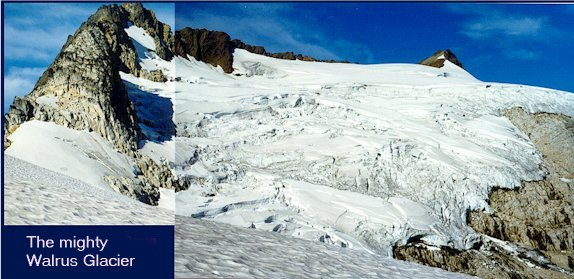
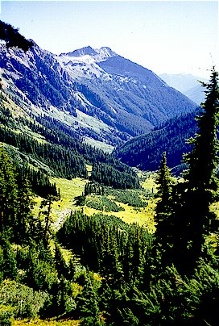
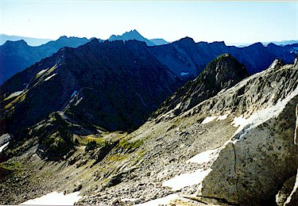
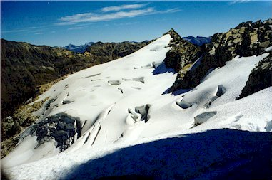
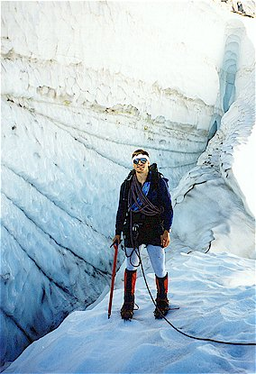
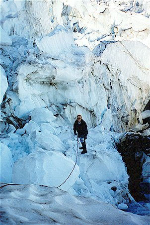
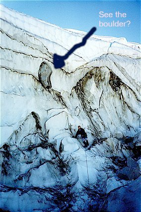
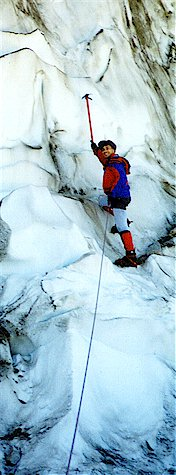

Clark Mountain Attempt
“A Walrus by Any Other Name”

This was probably the best trip of the summer, and owes a lot to Kris, who devoted 5 hours of her day to drive us to one trailhead and drop off a car at the other trailhead. This way, Steve and I had a wonderful one-way trip from the White River to the Chiwawa River. She volunteered to do this, under the condition that we never ask her to. But thank yous we can say and thank yous by the dozen we mean. Thanks darling!
This time we didn’t even try to lighten our packs, having been beaten into submission by Mt. Daniel. I may not have mentioned it before, but on that trip, I had boldly proposed to leave our sleeping bags at home. As it turned out, we were snowed on all night and I was thankful that my courage had quailed at the last minute as I shivered in my bag.
So, back up the White River for 4 easy miles. This time, no mosquitoes in sight, and clear blue skies. The miles went quickly and soon we headed up the Boulder Creek valley.
Even better, the horrible brush had either been trampled by dozens of horses or had begun to die off for the season. We saved 40 minutes by hoping over Boulder Creek, where we had endured a howlingly cold wade before.

We attained the Pass around 4 pm, still feeling pretty fresh. I stared at a lazy couple in the choice campsite for a few minutes, half-hidden by the stunted timberline trees. They hastily departed when my glazed stare and drooling countenance finally made them uneasy. I don’t know why, but that always seems to work!
Steve and I planned to camp here for two nights, a real luxury with us. We circled the camp, scratching and sniffing, trying out different standing and prone positions until it felt homey. There was water nearby, something we were immensely thankful for since the country was very hot and dry.
Feeling frisky, we took Beckey’s approach route to the glacier with a water bottle each. Excitingly steep heather took us high above camp. Using bear scat as a landmark, we found our way into a steep, rocky upper bowl and set on an ankle-twisting traverse. These things are like feverishly completed crossword puzzles, because you don’t stop concentrating for an instant. Nearly impossible to find a good pace, Steve totters ahead of me, then I jerk forward by a different route.

Finally we attain the glacial view and {\em Gott-in-Himmel!} We couldn’t have imagined anything cooler, or more dangerous. The glacier was an alpine ice-maw, a fearsome ur-glacier with teetering bridges of Schnee und Eis. Stunned by the beauty we gradually realized that climbing it to the top wouldn’t be possible with the brains and tools we have today. We briefly considered walking around to the easy route the next day, then discarded the idea, too entranced by the eerie siren song of wonder and uncertainty that was already calling.
Turning away momentarily, we commenced on a fun rocky scramble to the top of Peak 7240 up the ridge. Somewhere in here, Steve breezily suggested a shoulder stand. I countered with a hand-up for his foot and we overcame the obstacle. Too well did I remember how funny Steve found the incident in climbing lore where Fred Beckey stood on his brother’s shoulders, only to then move to his head(!) when the handhold proved to be just a little higher. Improbably, the brother’s name was Helmy.
On this peak we had the usual revelations under the evening sun. Our camp was barely visible and the drop really did inspire vertigo, so we carefully moved back. I wished I had brought the camera.

Down and to a hearty meal and quick sleep in the bivy sacks. Oh, we maintained a triangle camp, leery of bears. Getting the food sack hung was an ordeal and we nearly lost the cordage. We took turns leaning over a cliff on tiptoes prodding a sluggish carabiner with a ski pole. The carabiner would wrap lazily around more tree limbs each time we touched it. Finally we got it down, and managed to hoist the bag so high that a Fox Terrier wouldn’t be able to jump up and touch it. That was fine, because we knew that these intrepid wilderness terriers actually did most of the damage attributed to bears, so, y’know.
We let ourselves sleep in and got on the trail around 8 am. We carried a lot of water, because going for running water on a glacier is rather frightening. Usually, you can hear water under the snow somewhere, and to get it requires a descent into a constricting crevasse where maybe you could slide headfirst with a shakily outstretched water bottle for the ice-cold stream in the ice. We’ve never done this, but it’s easy to imagine an accurate portrayal.


Steve tied a big granny knot around his waist. I did the same and we were off! If only it were so easy! Actually, roping up for a glacier is a very tedious affair. Flake out the tangled rope, put on your harness, redress your pack with metal spiky things on the outside (like an industrial Christmas tree), attach various geegaws, tie various knots, and put on your crampons. Whoa! An hour has gone by.
Our crampons crunching into the hard snow, we approached the first crevasse. Easily walked around. Same with the next, next and next. Then we crossed one on a thick but skinny snowbridge. All of the crevasses started out wide and got thinner and thinner as they descended into darkness. We were pretty amazed!
Then we had some steep snow up to a lookout over a junkyard of ice. Unable to see a way down, we moved to another vantage point and saw that by going back we could step down 10 feet onto a snow boulder in the iceyard. Our plan was to set up an anchor on the lookout, with one climber belaying above.
I went in first, using my front points to get down to the boulder. From there, stepping carefully allowed me to explore 40 foot high ice walls with boulders embedded in them, and deep, smooth chasms crammed with movable blocks of ice. This area provided great photo opportunities!
Steve went in and expanded the explored territory a bit. Finally, we ran out of areas we could safely visit, and we packed up our anchors and headed back. The snowbridge held and we returned without incident. We felt incredibly lucky to have been able to get that far, and have so much fun.
Back at camp, we did some rappelling and easy climbing before dinner. We took a “post-repast constitutional” (Steve’s excellent phrase!) to watch the sunset on the western side of the ridge. Meeting a backpacker, we were warned about the very steep trail up to Little Giant Pass we would be tackling the next day. Advised to take extra time, we set our alarms for 5 am.
Ugh. Walking by 6 am, we descended to the mighty Napeequa River, reaching it at 7:30. We removed our boots and crossed the freezing, gray-brown water. Then we had a fascinating walk in this wild, broad valley. The trail heads down the river about a mile before climbing steeply to the pass, sometimes passing through deep brush, then opening pleasantly into grassy slopes. We talked about how neat this place was, and suddenly I slipped on a wet rock (Steve said there was a wet blade of grass on my boot), and crashed to the ground. We were in perfectly flat terrain, and that’s where I have to take my falls! How ironic…

The 2000 foot climb to \index{Little Giant Pass} Little Giant had some scary moments with downsloping vegetation that wanted to zing you over the cliff. Also, the trail was immensely steep. For the final leg, we were in the sun and traveling about .2 miles an hour. Luckily, we had carried plenty of water, since there was none around the pass where we had lunch.
We had about 4000 feet to climb down and it was 12 pm. We figured on being at the car in no time. Just down from the pass, beautiful huckleberry meadows had already turned red, providing a fall atmosphere. The sun was hot but breezes were cool. After getting more water, the trail became manically steep, and didn’t let up until almost all the way down. Our toes fell asleep from being pressed in the front of our boots and our knees creaked alarmingly. We really missed switchbacks on this luge run!
About halfway down, we got water at a creek and smelled burning wood. There was a campfire that had been built over pine-needles, hastily put out, and was now smoldering. Just waiting for a strong wind to turn it into a forest fire.

Steve sprang into action, supervising my many trips down to the
stream for water! While he doused the fire, I stumbled down
and up again with a fresh load.
Steve has great human insight…he knew that
to offer to trade places would adversely affect my self-esteem, so
he wisely kept to his supervisory role.
The rest of the way was uneventful, except for the weeping and the gnashing of teeth. I banged my knee on a tree stump, sending a singing pain through the forest with my echoing cries. Agonized, I cried to Steve, “don’t leave me here, no!” But he had gotten used to that days ago and plodded methodically ahead. Between his back and my feet we had groans aplenty and the car was a welcome sight. A surprise too, because we expected to descent another 400 feet. Upon realizing I was in the parking lot surrounded by staring bathers walking to the river, I reluctantly ceased my blubbering, having grown somewhat comforted by the sound.
By the way, one set of photos was lost by Target, so I have no pictures of the Napeequa River, nor any pictures of our interesting approach route to the climb. A few choice scenes of the basin near Little Giant Pass are, sadly, also missing.